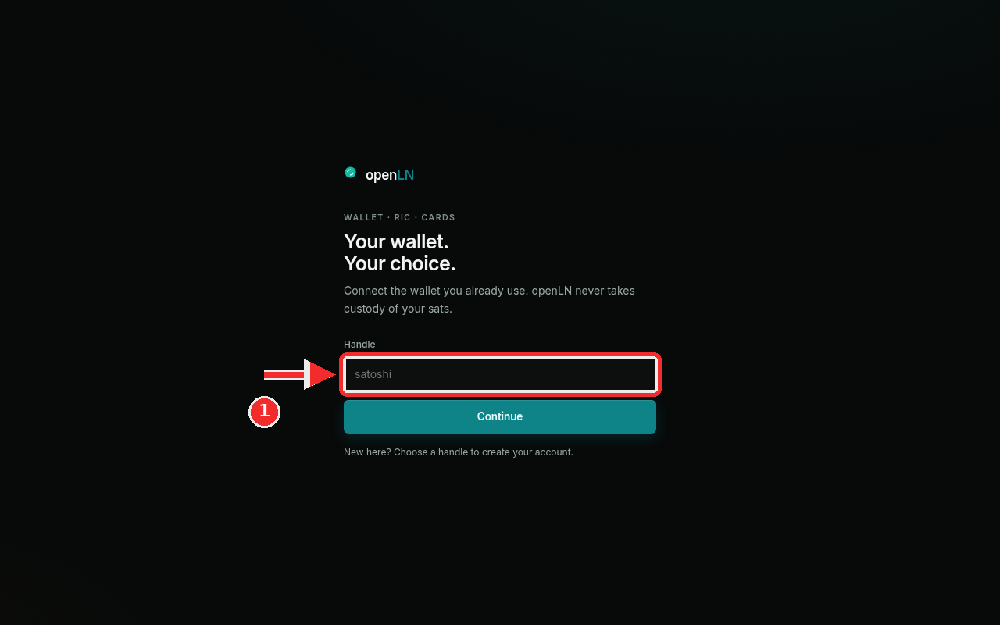
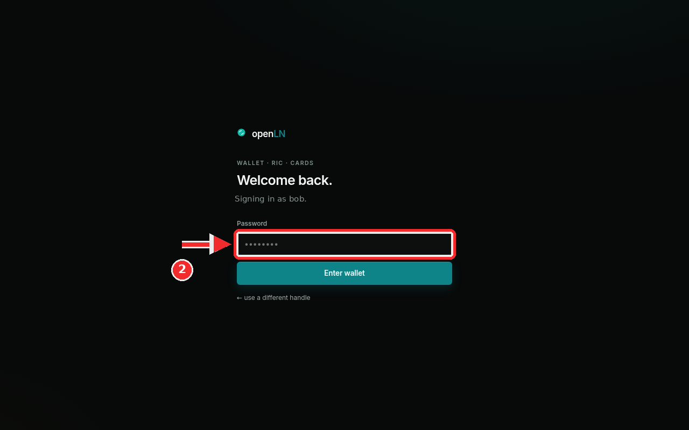

Every openLN account is a handle and a password. The handle is the short public name you sign in with, and the password protects it. Your wallet is a separate connection: it can be added or removed at any time, and openLN never takes custody of your sats. Signing in and creating an account both start on the same screen, and the app picks the right path once you type your handle. This guide covers both.
openln.com/app in any browser, or use the installed app on your phone or computer.bob.The app opens on a simple screen headed "Your wallet. Your choice." with the line "Connect the wallet you already use. openLN never takes custody of your sats." Below that is a single field, Handle, and a Continue button. A handle is a short public name for your account, like a username. For example, bob. You sign in with it, the openLN team sees it when you ask for support, and your RIC and cards are identified by it. Handles are case-insensitive: Bob and bob are the same account.
Type your handle into the field. In the screenshot the red box marks it; the grey word inside is only an example, not a value you need to keep. Then press Continue. openLN checks the handle and sends you to one of two places. If an account already exists for it, you go to the password screen in Step 2. If nobody has it yet, openLN treats you as new, exactly as the line under the button says: "New here? Choose a handle to create your account." The screen becomes "Create your account." and asks you to choose a password of at least 12 characters. Press Create account, and the account is created right there and you are signed in. You can connect a wallet whenever you are ready, and nothing is charged at any point.

The password screen says "Welcome back." and under it: "Signing in as" followed by the handle you just typed, so you can confirm which account this password belongs to. The name in the screenshot is a demo account; yours will be the handle from Step 1. Type your password into the Password field. It shows as dots while you type, which is normal. Then press Enter wallet. If the password is correct you land on your Wallet view, ready to take payments. If it is not, openLN shows a short message above the button and lets you try again.
If you mistyped the handle, use the small link at the bottom of the box: "use a different handle". It returns you to the first screen so you can type another handle. Nothing is lost when you go back.
